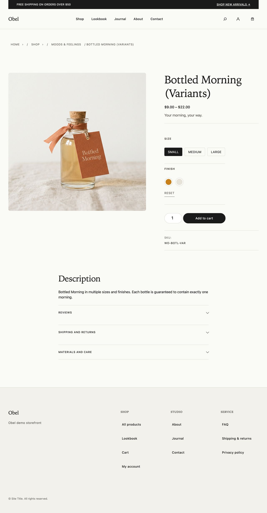
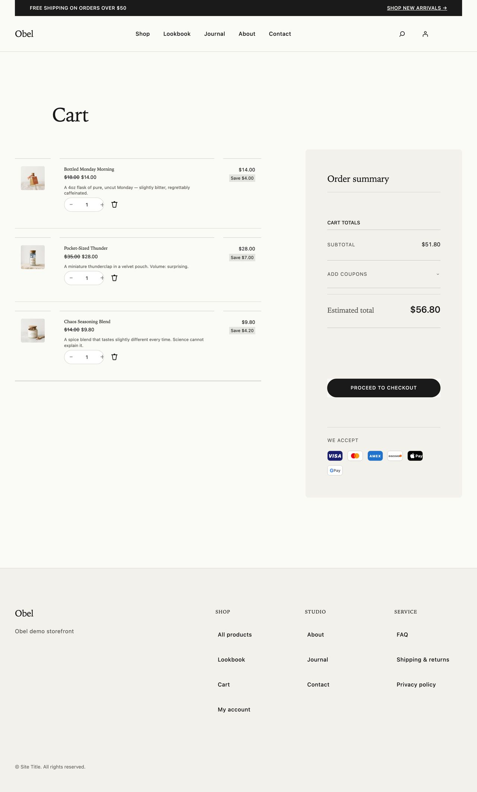
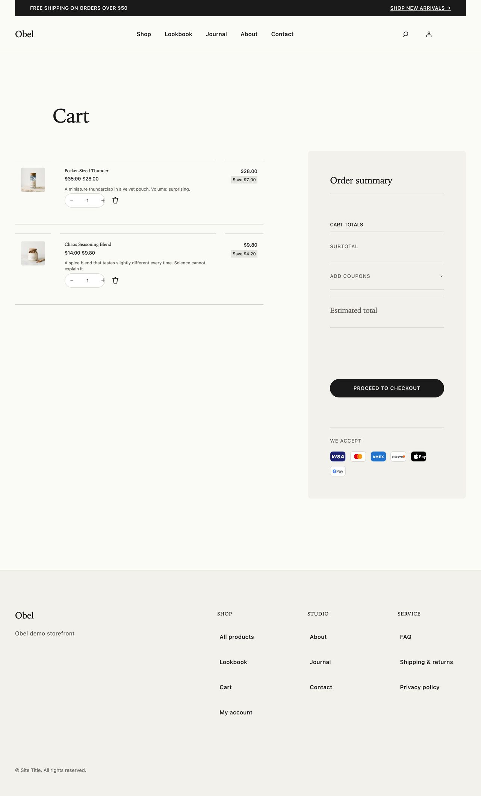
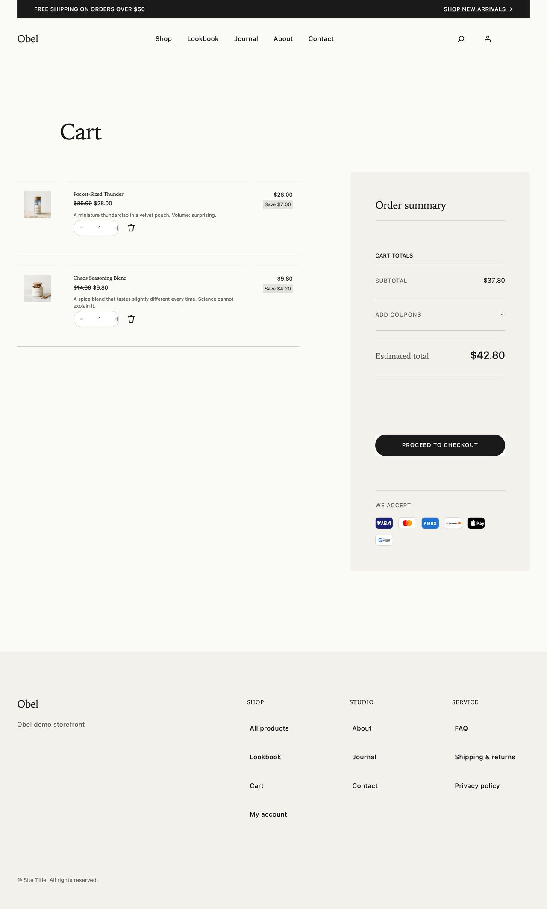
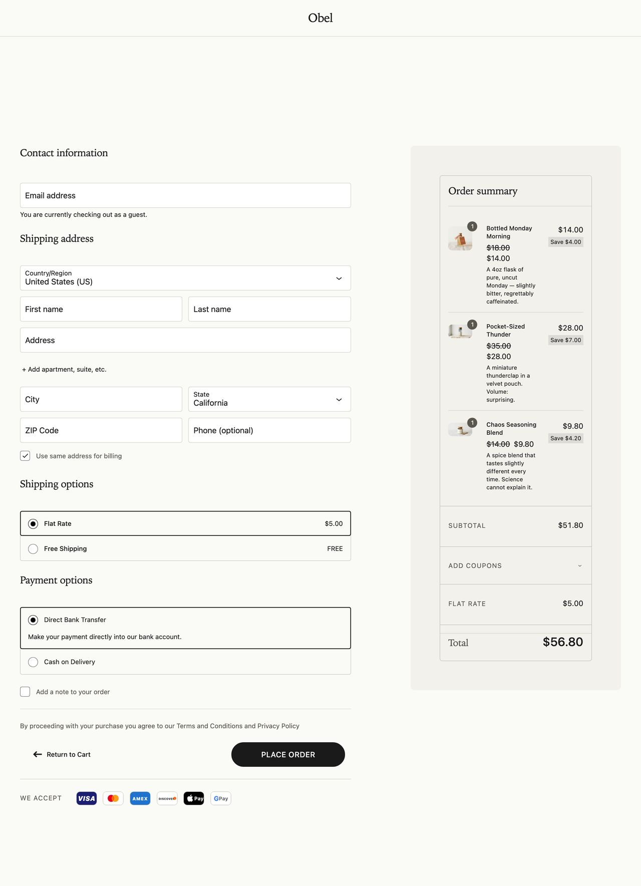
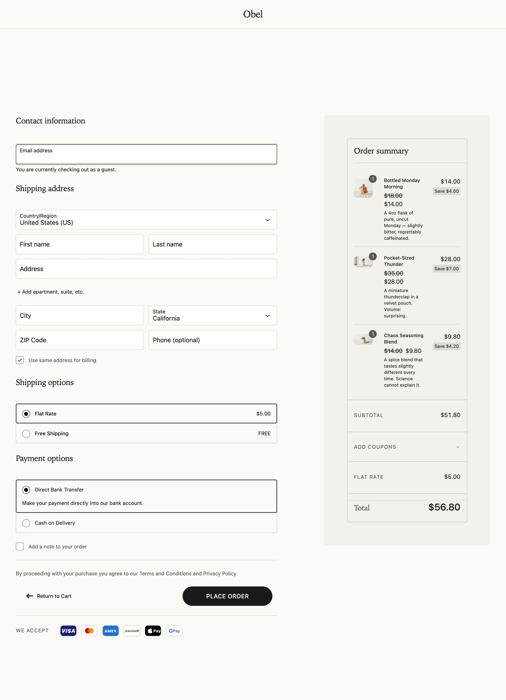
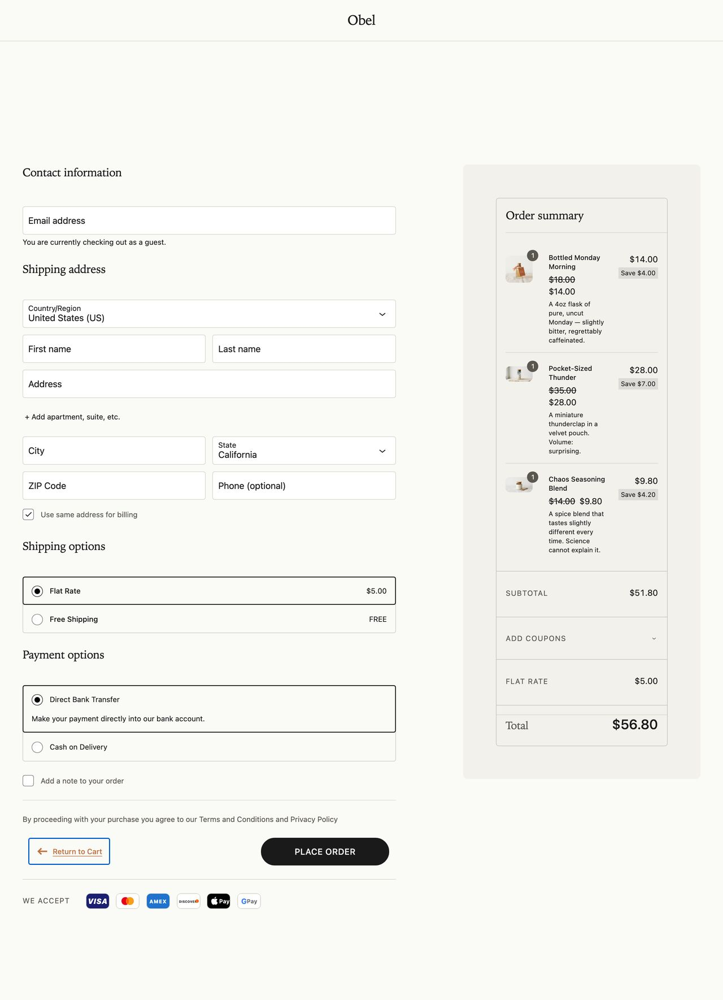
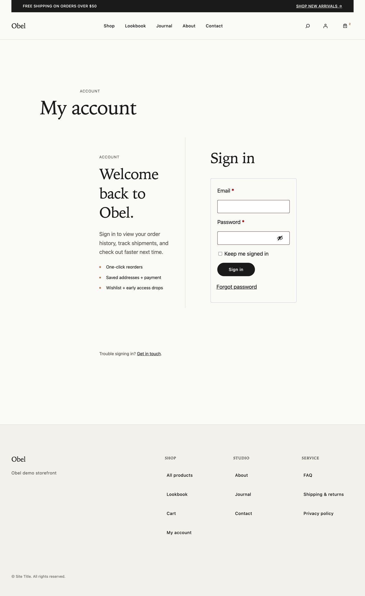

home
Editorial front-page (theme identity, hero, featured products).

shop
WC shop archive with sort dropdown and product grid.

product-simple
Single simple product with gallery, add-to-cart, reviews.

product-variable
Single variable product with attribute swatches and variation image swap.

product-variable.swatch-pick
swatch-pick
Single variable product with attribute swatches and variation image swap.

category
Single product-category archive page.

cart-filled
Cart page with 3 items pre-loaded via wo-cart-mu.php.

cart-filled.line-remove
line-remove
Cart page with 3 items pre-loaded via wo-cart-mu.php.

cart-empty
Cart page in empty state (regression-prone block).

checkout-filled
Checkout with 3 items pre-loaded; the desktop-squeeze hot-spot.

checkout-filled.field-focus
field-focus
Checkout with 3 items pre-loaded; the desktop-squeeze hot-spot.

checkout-filled.return-to-cart-visible
return-to-cart-visible
Checkout with 3 items pre-loaded; the desktop-squeeze hot-spot.

my-account
My Account login form (logged-out view).

journal
Blog index (posts page) for editorial typography.